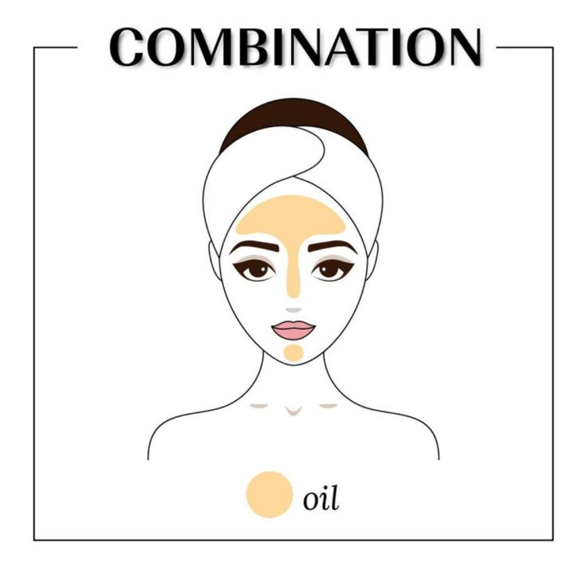
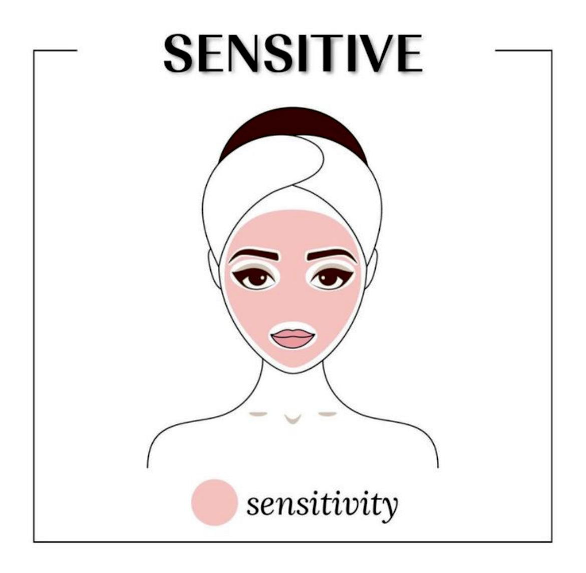
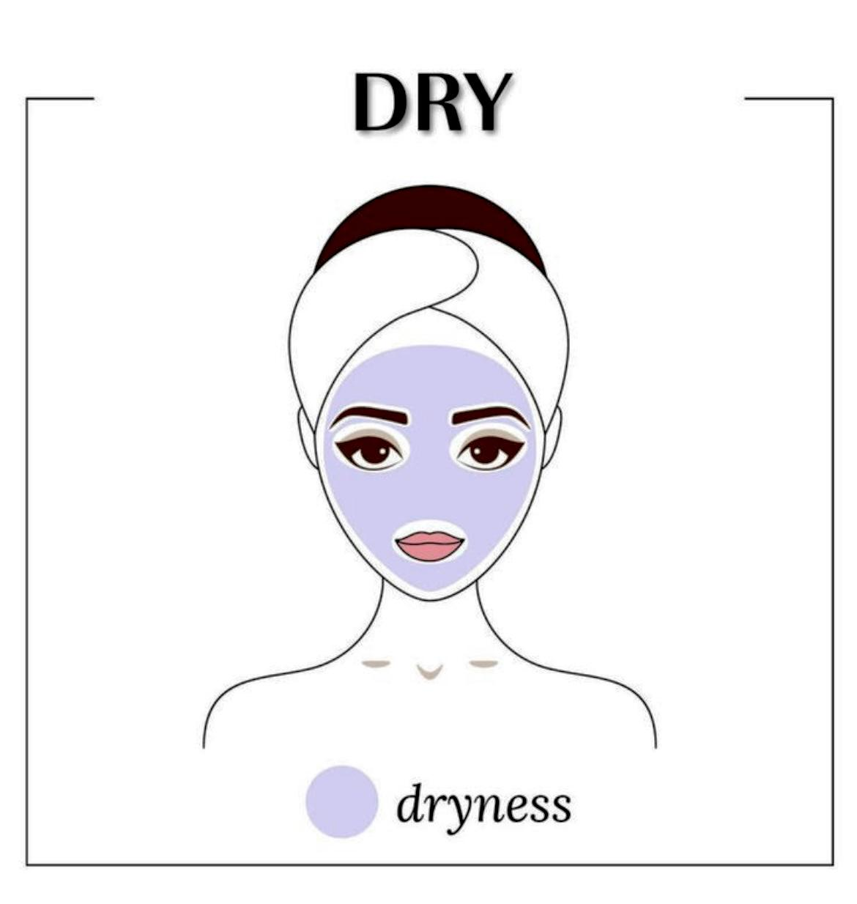
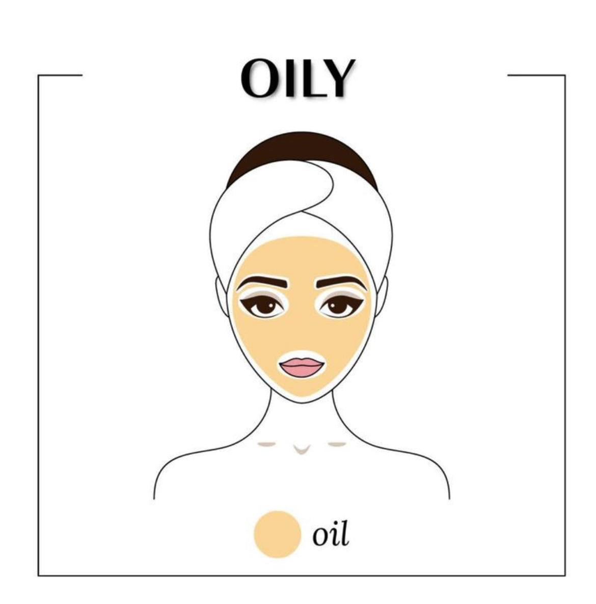

<!DOCTYPE html>
<html></html>
<head>
    <meta charset="UTF-8">
    <meta name="viewport" content="width=device-width, initial-scale=1.0">
    <title>Know Your Skin</title>
    <link rel="stylesheet" href="style.css">

</head>
<body>
    <header>
        <h1>KNOW YOUR SKIN</h1>
        <nav>
            <a href="#home">Home</a>
            <a href="about.html">About</a>
            <a href="#types">Skin Types</a>
            <a href="#tips">Tips & Products</a>
            <a href="contact.html">Contact</a>
        </nav>
    </header>

    <section id="home">
        <h2>Welcome to Your Skincare Guide</h2>
        <p>Discover how to take care of your unique skin type for a healthy glow.</p>
        
    </section>

    <section id="types">
        <h2>Skin Types</h2>
        <p>Learn about different skin types and how to care for them.</p>


        <div class="skin-type">
            <h3>Normal Skin</h3>
            
            
            <p>Healthy, even skin. Requires balanced skincare routine.</p>
        <div class="skin-type">
            <h3>Combination Skin</h3>
            

            <p>Oily in some areas (like the T-zone) and dry in others. Requires balanced care.</p>
        </div>
        <div class="skin-type">
            <h3>Sensitive Skin</h3>
            

            <p>Easily irritated by certain products or weather. Needs gentle, soothing products.</p>
        </div>
        <div class="skin-type">
            <h3>Dry Skin</h3>
            

            <p>Feels tight, rough, or flaky. Needs intense hydration and moisture-locking ingredients.</p>
        </div>
        </div class="skin-type">
            <h3>Oily Skin</h3>
            

            <p>Has a greasy, oily texture. Requires gentle cleansers and moisturizers.</p>
    </section>

    <section id="tips">
        <h2>Skincare Tips & Products</h2>
        <ul>
            <li>💧 Always stay hydrated — drink water!</li>
            <li>🧴 Use sunscreen daily, even on cloudy days.</li>
            <li>🌿 Choose products that match your skin type.</li>
            <li>🛁 Avoid harsh scrubs for sensitive skin.</li>
        </ul>
    </section>
    </body>
    </html>

    <!-- <section id="contact">
        <h2>Contact Us</h2>
        <form>
            <label>Name:</label><br>
            <input type="text" name="name" required><br>
            <label>Email:</label><br>
            <input type="email" name="email" required><br>
            <label>Message:</label><br>
            <textarea name="message" rows="5" required></textarea><br>
            <button type="submit">Send</button>
        </form>
    </section>

    <footer>
        <p>&copy; 2025 Know Your Skin. All rights reserved.</p>
    </footer>
</body> 


